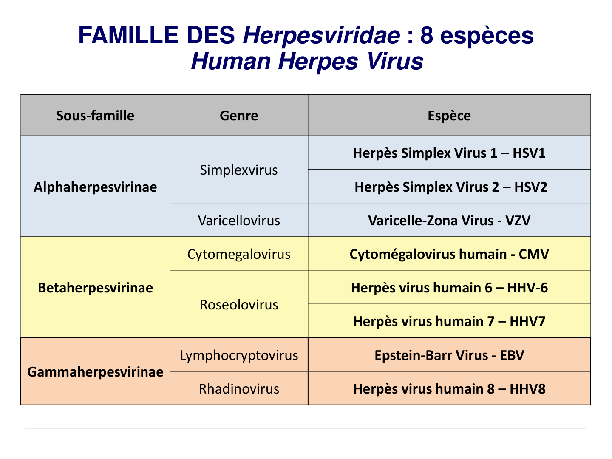
| Sous-famille | Genre | Espèce (HHV) | Séroprévalence (France) |
|---|---|---|---|
| Alphaherpesvirinae | Simplexvirus | HSV-1 (HHV-1) | >80% |
| HSV-2 (HHV-2) | ~20% | ||
| Varicellovirus | VZV (HHV-3) | >90% | |
| Betaherpesvirinae | Cytomegalovirus | CMV (HHV-5) | ~50% |
| Roseolovirus | HHV-6 | >90% | |
| HHV-7 | >90% | ||
| Gammaherpesvirinae | Lymphocryptovirus | EBV (HHV-4) | >95% |
| Rhadinovirus | HHV-8 (KSHV) | 1-5% |
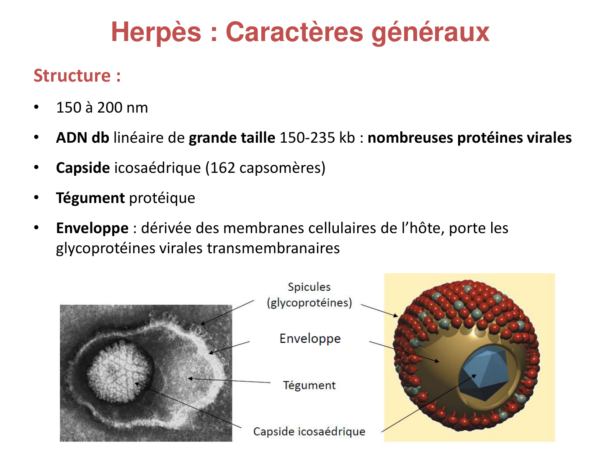
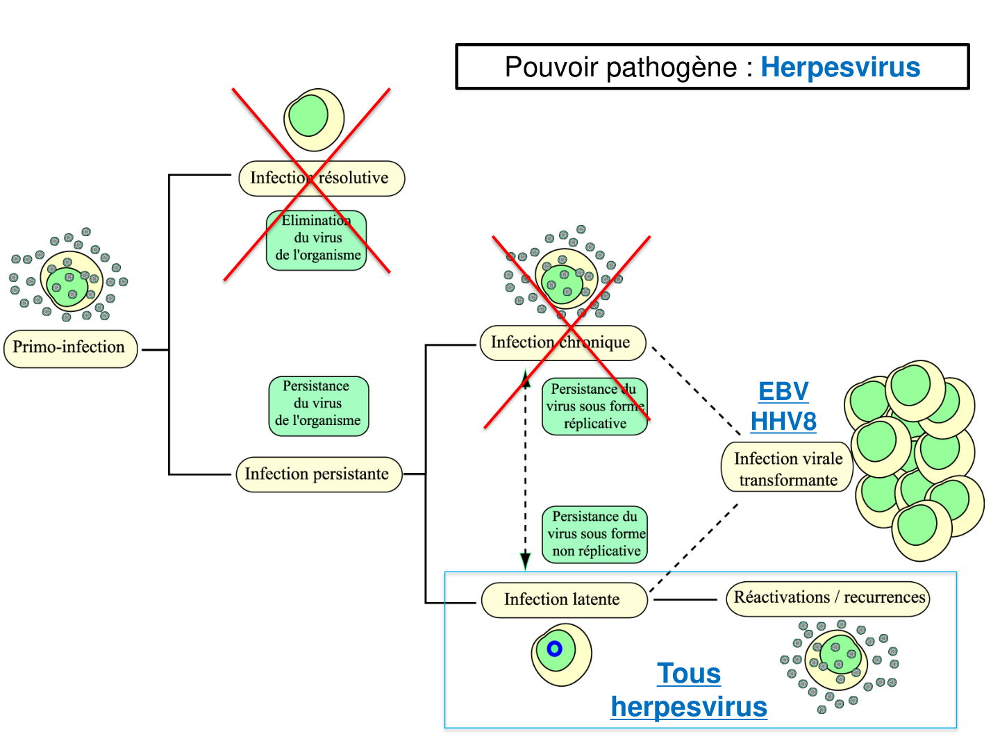
| Virus | Cellule hôte de la latence | Tropisme |
|---|---|---|
| HSV-1 | Corps cellulaires des neurones sensitifs — ganglion de Gasser | Neurotropes |
| HSV-2 | Corps cellulaires des neurones sensitifs — ganglions sacrés | |
| VZV | Neurones des ganglions sensitifs rachidiens et des paires crâniennes | Neurotrope |
| CMV | Cellules CD34 de la moelle, monocytes-macrophages, cellules endothéliales | Leucotropes |
| HHV-6 | Monocytes-macrophages, cellules épithéliales | |
| HHV-7 | Cellules mononucléées du sang, cellules épithéliales | |
| EBV | Lymphocytes B mémoires | Leucotrope |
| HHV-8 | Lymphocytes B | Leucotrope |
| Phase | Gènes | Protéines |
|---|---|---|
| 1 — Très précoces | Gènes α | Protéines activatrices de l'expression β |
| 2 — Précoces | Gènes β | Enzymes de réplication dont l'ADN polymérase virale |
| 3 — Tardifs | Gènes γ | Protéines de structure (capside, glycoprotéines) |
ADN dans le noyau → réplication → assemblage capsides → bourgeonnement par membranes nucléaires et Golgi → libération.
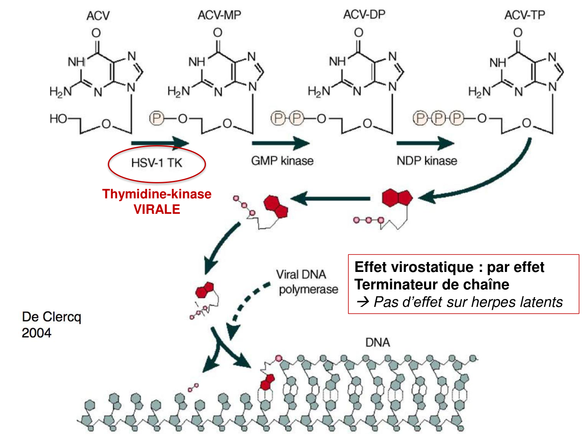
| Molécule | Mécanisme | Indications principales |
|---|---|---|
| Aciclovir (ACV) | Analogue nucléosidique de la guanosine. Activation par TK virale → inhibition ADN pol | HSV-1, HSV-2, VZV |
| Valaciclovir | Prodrogue d'aciclovir (meilleure biodisponibilité orale) | HSV, VZV |
| Ganciclovir | Analogue nucléosidique — activation par UL97 kinase CMV | CMV +++ |
| Valganciclovir | Prodrogue orale du ganciclovir | CMV (traitement/prophylaxie) |
| Foscarnet | Inhibiteur direct ADN pol (pas besoin activation TK) — 2e ligne | Résistances aciclovir/ganciclovir |
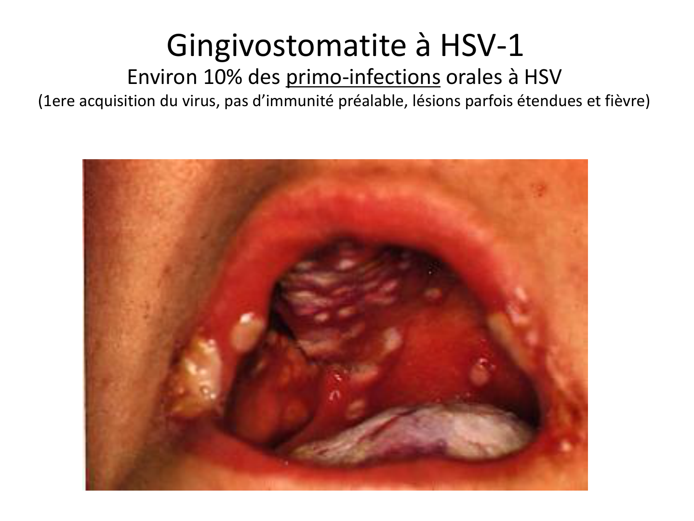
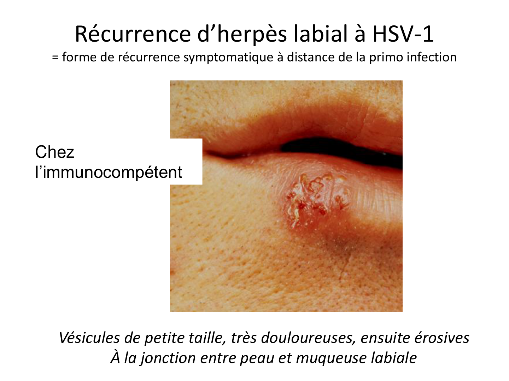
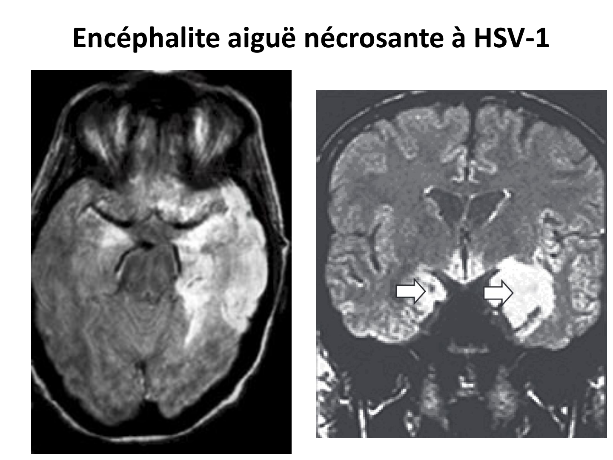
| Forme | Virus | Statut | Prise en charge |
|---|---|---|---|
| Gingivostomatite | HSV-1 | Primo-infection | Aciclovir oral si sévère |
| Herpès labial récidivant | HSV-1 | Récurrence | Aciclovir crème / rien si bénin |
| Herpès génital | HSV-2 >> HSV-1 | Primo/récurrence | Valaciclovir oral |
| Méningoencéphalite | HSV-1 | Récurrence | Aciclovir IV urgence |
| Herpès néonatal | HSV-2 (> HSV-1) | Primo-infection néonatale | Aciclovir IV + césarienne prophylactique |
| Kératite | HSV-1 | Récurrence | Aciclovir collyre — JAMAIS corticoïdes |
| Atteintes immunodéprimé | HSV-1 ou HSV-2 | Primo/récurrence sévère | Aciclovir/foscarnet IV |
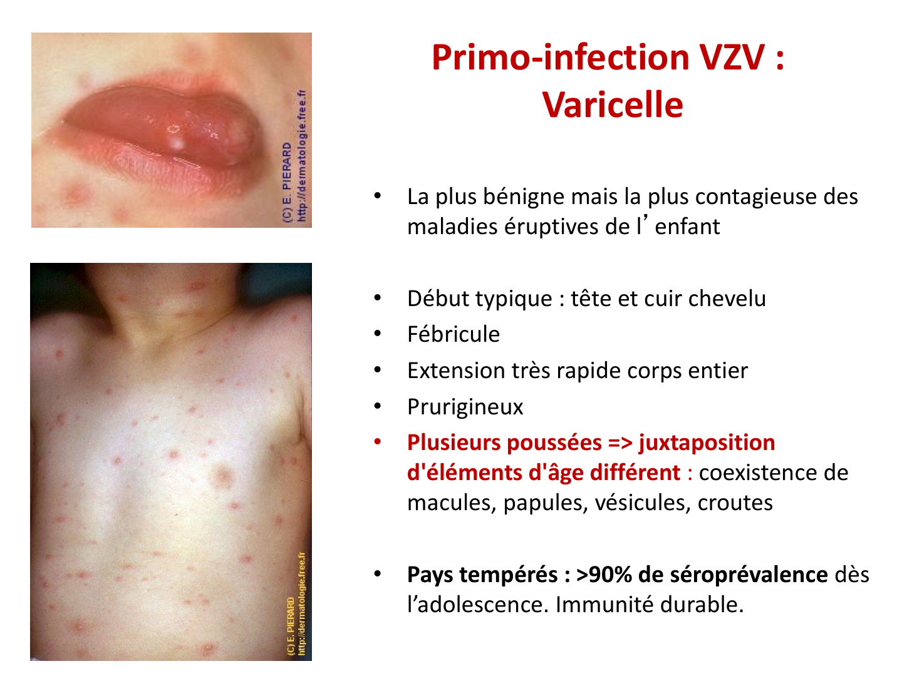
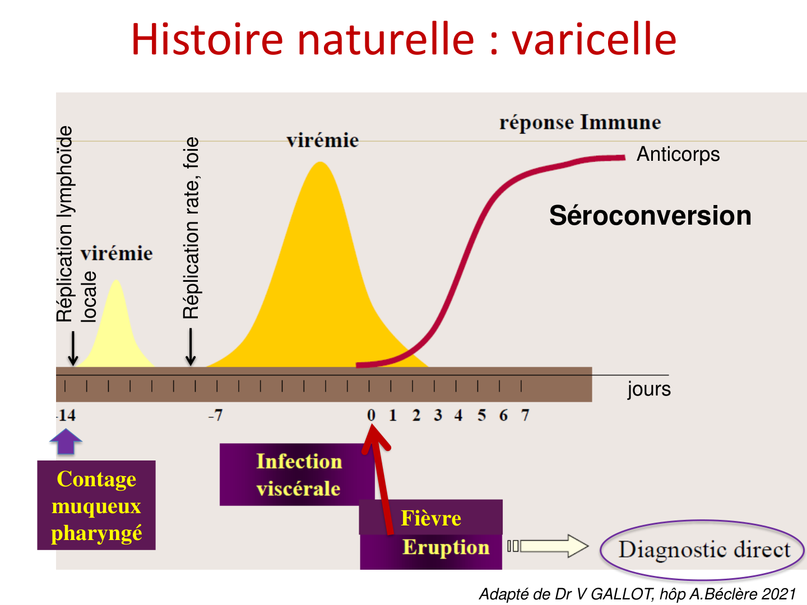
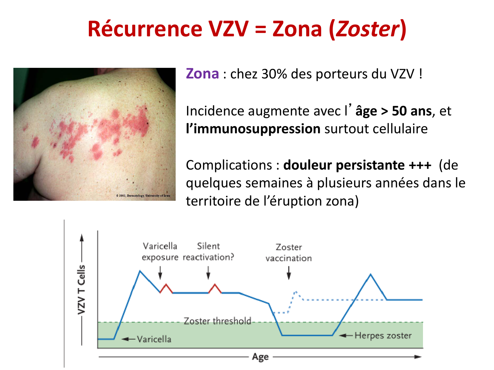
| Situation | Diagnostic | Traitement / Prévention |
|---|---|---|
| Varicelle / Zona typique | Clinique+++ (diagnostic clinique) | Symptomatique (antihistaminiques, antiseptiques) |
| Forme atypique / immunodéprimé | PCR VZV (lésions, LCR) | Aciclovir IV |
| Zona (toute forme) | Clinique ou PCR | Valaciclovir oral si début précoce |
| Contage chez non-immun à risque | Sérologie IgG VZV | Immunoglobulines anti-VZV dans les jours suivants + vaccin si pas CI |
| Prévention générale | — | Vaccin VZV vivant atténué (CI grossesse) / Vaccin Ag Zona (adulte) |
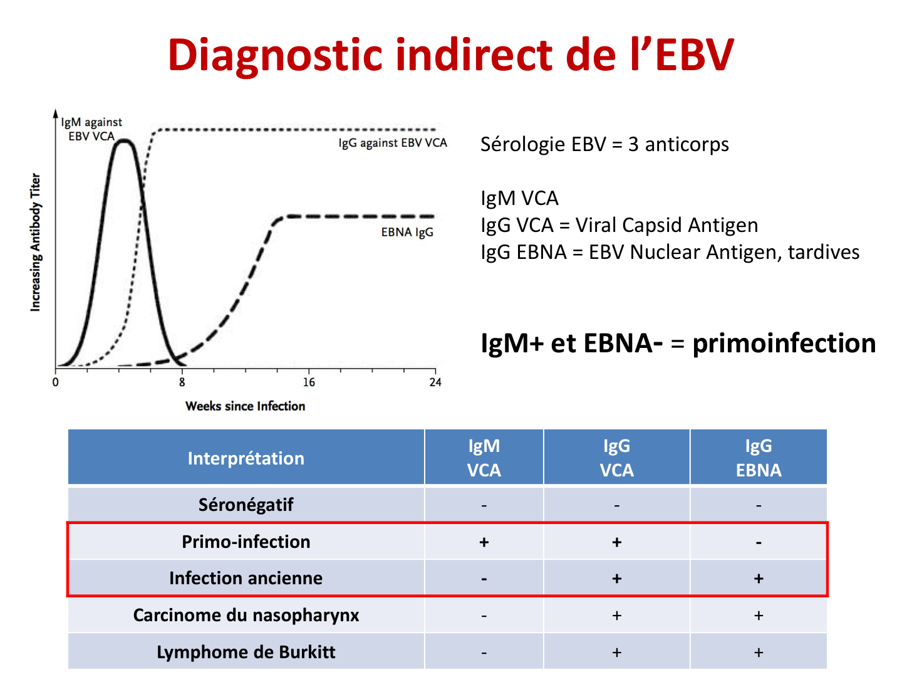
| Interprétation | IgM VCA | IgG VCA | IgG EBNA |
|---|---|---|---|
| Séronégatif | - | - | - |
| Primo-infection | + | + | - |
| Infection ancienne | - | + | + |
| Carcinome nasopharyngé | - | + | + |
| Lymphome de Burkitt | - | + | + |
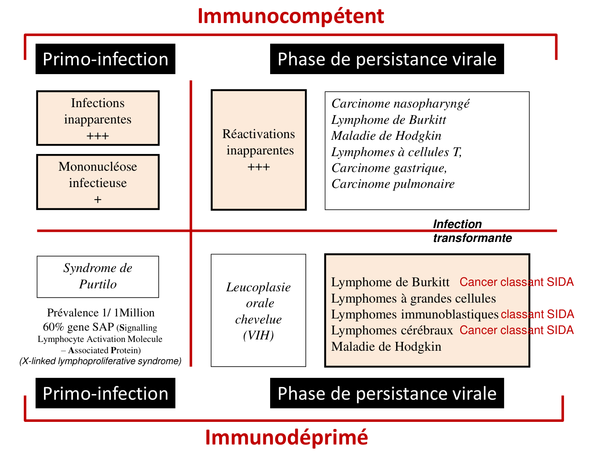
| Cancer | Population | Marqueur |
|---|---|---|
| Lymphome de Burkitt | Enfants Afrique subsaharienne | EBV + paludisme chronique |
| Carcinome nasopharyngé | Asie du Sud-Est, Afrique | EBV + facteurs génétiques |
| Lymphomes B (immunodéprimé) | Greffés, SIDA | PCR EBV CV élevée |
| Maladie de Hodgkin | Tous | EBV dans cellules Reed-Sternberg |
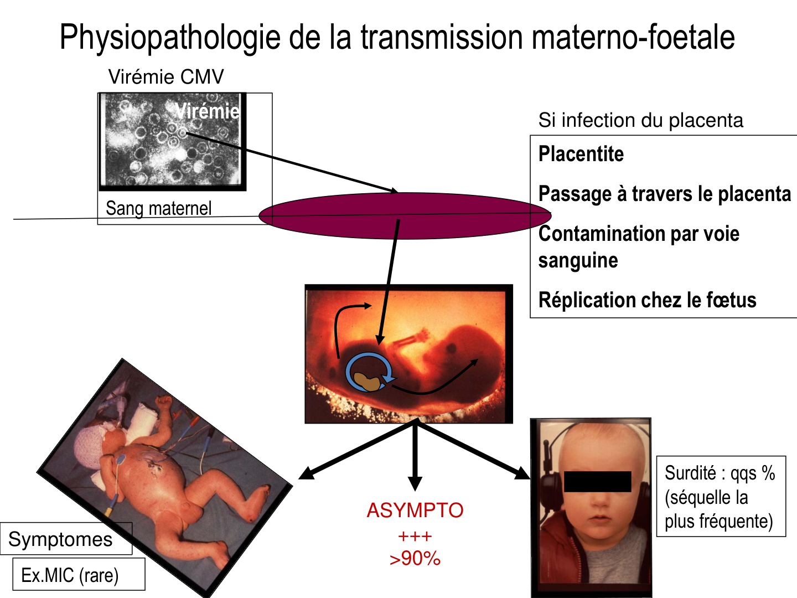
| Méthode | Indication | Prélèvement |
|---|---|---|
| Sérologie CMV (IgM + IgG) | Suspicion primo-infection (séroconversion) ; statut donneur/receveur greffe ; grossesse | Sang |
| PCR ADN CMV quantitative | Infection active chez l'immunodéprimé, diagnostic congénital, suivi thérapeutique | Sang, LCR, biopsie, LBA, urine/salive NN |
| Antigénémie pp65 (ancienne) | Remplacement progressif par PCR | Sang |
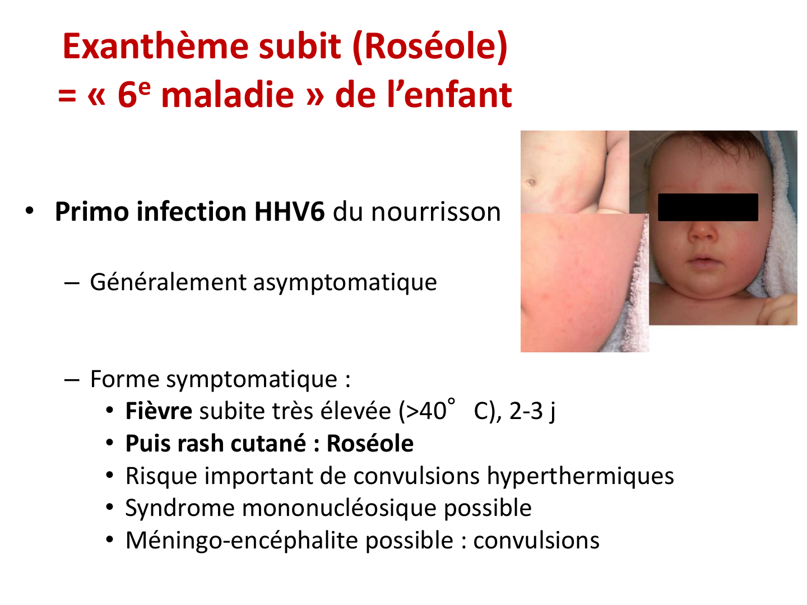
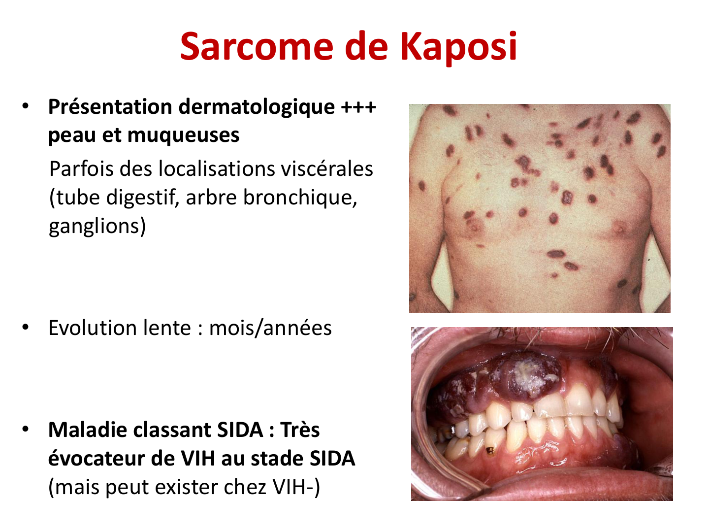
| Virus | Transmission | Primo-infection | Latence | Réactivation / Récurrence | Formes graves | Traitement |
|---|---|---|---|---|---|---|
| HSV-1 | Salive, contact direct | Asympto 90% / Gingivostomatite 10% | Ganglion de Gasser | Herpès labial | Encéphalite (urgence !), kératite | Aciclovir/valaciclovir |
| HSV-2 | Sécrétions génitales (IST) | Asympto 2/3 / Herpès génital 1/3 | Ganglions sacrés | Herpès génital récidivant, méningite | Herpès néonatal (mortel++) | Aciclovir/valaciclovir |
| VZV | Aérien (gouttelettes) | Varicelle (très contagieuse) | Ganglions sensitifs rachidiens | Zona (métamérique, unilatéral) | Pneumonie, encéphalite, varicelle congénitale | Aciclovir IV / valaciclovir. Vaccin VZV |
| EBV | Salive (« kissing disease ») | Asympto chez enfant / MNI chez ado | Lymphocytes B mémoires | Inapparente (réactivations silencieuses) | Lymphomes B (immunodéprimé), carcinome nasopharyngé | Pas d'antiviral. Symptomatique. Anti-CD20 si lymphome |
| CMV | Tous liquides biologiques, greffe | Asympto >90% / sd mono rare | Cellules CD34, monocytes-macrophages | Viscérale chez immunodéprimé | Rétinite, colite, encéphalite (SIDA) / Surdité congénitale | Ganciclovir/valganciclovir |
| HHV-6 | Salive | Exanthème subit (roséole) nourrisson | Monocytes-macrophages | Asympto chez immunocompétent | Encéphalite chez grand immunodéprimé | Pas de traitement spécifique |
| HHV-7 | Salive | Asympto / fièvre banale | Mononucléaires sang | Aucune connue | Aucune démontrée | Aucun |
| HHV-8 | Salive, sexuel, greffe | Asymptomatique | Lymphocytes B | Kaposi / lymphomes B (immunodéprimé) | Sarcome de Kaposi (classant SIDA) | Baisse immunosuppression + ARV VIH |